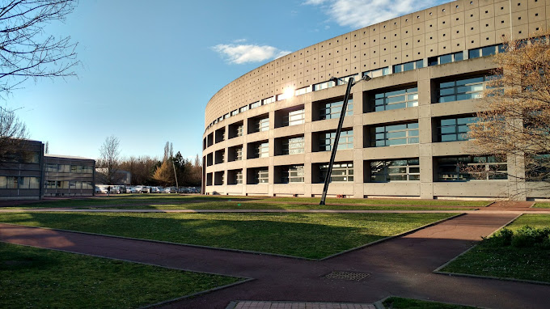

Formation
BUT- Réseaux et Télécommunications

Début de ma première année de Bachelor Universitaire de Technologie en Réseaux et Télécommunications à Clermont-Ferrand.
Lycée Lafayette
Obtention du baccalauréat général mention bien avec les spécialités mathématiques et numérique sciences de l'informatique au lycée Lafayette.
Experiences professionnelles
Technicien/Monteur – Verdot Biotechnologies
2024
J'ai travaillé chez Verdot Ips2 durant 1 mois. Cette expérience m'a permis de développer des compétences techniques dans un environnement industriel très exigeant. J'ai participé à la préparation et à l'assemblage de divers équipements pharmaceutique, en veillant à la précision des installations et à la conformité des normes de sécurité. Cela m'a également appris à m'adapter rapidement aux nouveaux environnements de travail et à gérer des tâches variées, parfois complexes, tout en restant rigoureux.
Castration de Maïs
2017 - 2018
Pendant deux années consécutives, j'ai travaillé à la castration de maïs sur une période d'un mois chaque année. Cette expérience m'a permis de développer des compétences manuelles dans un environnement agricole rigoureux. J'ai appris à travailler en équipe, à gérer des tâches répétitives avec rigueur et à respecter des délais serrés. Elle m'a également appris à m'adapter rapidement aux conditions de travail extérieures parfois difficiles tout en restant concentré et efficace.
Mes Projets
Programmation du Robot Maqueen

Ce projet de programmation avait pour but de faire évoluer un robot Maqueen afin qu'il réalise un parcours autonome. Le robot devait d'abord suivre une ligne, puis en sortir, se rendre jusqu'à un trou pour y poser une balle, revenir sur la ligne et enfin compléter le circuit. J'ai pris en charge l'intégralité de la programmation Python, en intégrant les algorithmes nécessaires pour gérer les capteurs du robot, coordonner ses mouvements et assurer la fluidité des différentes étapes du parcours.
Logiciel de Gestion de Bibliothèque
Dans ce projet, j'ai développé un logiciel de gestion de bibliothèque permettant de gérer les prêts et les retours de livres. L'application offre également des fonctionnalités complètes pour ajouter, éditer et supprimer des livres dans la base de données. Le projet a été réalisé en Python, avec l'utilisation de Tkinter pour l'interface graphique et SQLite pour la gestion de la base de données.
Compétences
Programmation
- Python
- Web
- CSS
Télécommunications
- Mesure, Décomposition et
- caractérisation de signaux
Système

- Administration système
- Création Machines Virtuelles
Réseau

- Configuration switch/routeur
- Simulation réseau avec Packet Tracer
Mes Loisirs
Objets Connectés

Je m'intéresse particulièrement aux objets connectés et à la domotique, et utilise des applications comme Home Assistant et SmartThings pour gérer des éléments comme les lumières, portes, portails, fenêtres et radiateurs par exemple. J'ai développé mes propres automatisations, ce qui me permet de rendre mon environnement plus confortable et fonctionnel. J'ai également modifié certains pilotes d'appareils initialement non-compatibles pour les intégrer à mon système domotique, maximisant ainsi leur potentiel et leur efficacité dans mon réseau.
Bowling
Le bowling est un sport que je pratique au club de la B.Bowl situé à La Pardieu et que je trouve particulièrement captivant. J'apprécie non seulement son aspect stratégique et compétitif, mais je m'y intéresse également de manière approfondie. Je passe énormément de temps à étudier toutes les caractéristiques du jeu et à discuter avec d'autres passionnés, en leur demandant régulièrement des conseils pour améliorer mon jeu. À partir de l’année prochaine, je prévois de rejoindre des ligues pour continuer à progresser et à relever de nouveaux défis dans ce sport.
Contact
Email :paulin.roussel@etu.uca.fr